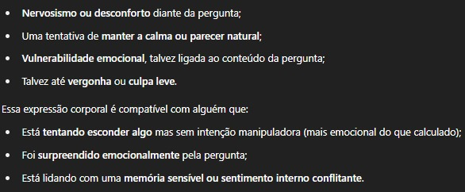
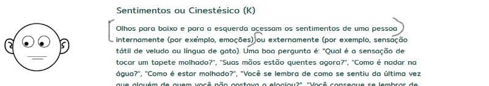

Bem-vinda Ingrid!
Um repositório feito de você para você!
Transferência Emocional nas Relações Amorosas
Entendendo a Transferência Emocional:
A transferência emocional ocorre quando alguém projeta padrões emocionais antigos em um parceiro atual. Isso pode envolver expectativas ou reações que não estão necessariamente relacionadas ao comportamento real do parceiro, mas sim a experiências passadas.
Sinais de Transferência Emocional:
- Comparações com ex-parceiros
- Reações extremas e injustificadas
- Evitação emocional
- Acusações repetitivas
Estratégias para Lidar com a Transferência:
- Consciência do Mecanismo
- Diálogo Empático
- Estabelecimento de Fronteiras Saudáveis
- Apoio Terapêutico
Reflexões Pessoais e Lições Aprendidas:
A narrativa apresentada reflete um profundo autoexame e conscientização. Sentimentos de uso e instrumentalização foram identificados, revelando a complexidade das emoções envolvidas.
Essas reflexões podem guiar futuros relacionamentos para uma dinâmica mais saudável e consciente. Ao enfrentar e compreender a transferência emocional, é possível construir conexões mais genuínas e satisfatórias.
You, yourself and I
Como senti isso:
Eu me senti usado, como se estivesse sendo instrumentalizado para satisfazer as necessidades emocionais de outra pessoa. Isso me deixou inseguro sobre o meu valor e o que realmente significava para a você.
Forte demais para um relacionamento que acabava de começar, mas ao qual eu me doava muito.
Na paciência, cuidado, mimos... Eu sabia que não aguentaria tanto, não importa o quanto eu te desse, você sempre voltava precisando mais, e eu tinha uma bateria difícil de manter.
Quando finalmente voltei para aquele sorriso, o desviar de olhar, o leve gesto no cabelo - algo que você nunca faz - o abraço que você teve consigo mesma, sobre o braço direito.

Naquele dia, o seu sorriso me matou.

Americando não sabe o que é ponto de vista, então essse é o equivalente a baixo-direita
Eu me sentia invisível, como se minhas emoções fossem irrelevantes. Era como se eu estivesse em um palco, atuando para um público que nunca realmente me via.
Eu não sabia como expressar o que sentia, esperava que você, por me amar, visse os sinais antes que fosse tarde, mas parecia que nada disso chegava até você. Eu queria que você me visse, não apenas como alguém que estava lá para te apoiar, mas como uma pessoa com sentimentos e necessidades próprias.
Eu já não lembro mais de muito do que aconteceu, mas as sensações persistiram.
Primeiro escrevi em papel para organizar todas as idéias, e ajudou, ao final de tudo eu perceberia que desde o início eu já vinha sendo confundido.
Na primeira noite eu aprenderia algo de você que você viria a contradizer depois. Tudo aquilo pareceu muito mais natural para você do que para mim, como se você já estivesse estado naquela posição muitas vezes. Naquele abraço, naquela conversa, naquele momento...
Então, diante disso, baixei minhas espectativas emocionais em você, para que eu não esperasse demais de um encontro que para você parecia levemente normal.
Em seguida te vi hesitante, sobre pedir ou não pedir qualquer coisa, como se sua vontade só fosse válida se viesse de mim também.
E então chegamos:
Depois disso veio o pedido para um certo jeito na relação íntima. Um jeito que você gosta mas que é muito difícil para mim. Sua aparência no ato remete a alguém sendo usado, e só consigo passar por isso quando estou muito bem mentalmente. Eu tentei abrir mão de parte de mim para abraçar isso por ti. Eu não vi mal de início.
Lembro-me de quando eu era todo em acusações sobre você, do que fazia e de como fazia. Poucas coisas, mas recorrentes. Você se recluiu, arbitrariamente tornou-se submissa, e eu não sabia como lidar com isso. Eu não queria que você fosse submissa, eu queria que você fosse você mesma, mas você parecia não tão confortável. Naquele momento senti um ar negativo - onde há um problema -, a menção em suas palavras de se submeter às minhas vontades pois, segundo você, eu sabia o que era melhor e você "sempre parecia estar errada". Isso reforçou a idéia de que você passava, em silêncio, por problemas que há muito já haviam passado, que só existiam e ainda estavam vivos em você
Eu não me recordo de onde tirei a frase "essa pessoa traz outros relacionamentos para dentro do atual".
As referências estarão aqui, menos dessa.
A frase diretamente me lembrou de quando eu repeti, ao menos duas vezes: "meu passado está no passado, mas o seu não". Você dizía que estava e então eu mencionava o Bruno, pois não podia mencionar o fantasma que eu sentia e não sabia o nome.Apesar de você ter conseguido fazer essa amizade dar certo, mesmo com esses tantos "porém" do comportamento do Bruno, eu vejo explicitamente uma tentativa de manter o passado no presente.
Você poluiu sua vida com tudo que já te causou algum conforto, e me parece as vezes não dissociar a memória da pessoa.
Eu não sei se isso é algo que você faz intencionalmente, mas é como se você estivesse carregando o peso do passado para o presente, e isso afeta a forma como você se relaciona comigo e com os outros. Porém essas tentativas são explícitas e impossíveis de não notar para quem está próximo de você, parecem muito conscientes. Honestamente, já não me incomoda, eu enguli isso como tantas outras coisas.
De alguma forma, em algum momento me vi como um objeto para ti, e senti essas e outras agressões a mim e ao nosso relacionamento. A maioria deles não parece ruim, você essencialmente não é má, mas haviam esses pontos tóxicos que destoam do que normalmente você é, repentinamente você assume comportamentos egoístas e me põe em risco. E eu quase nunca me sinto em risco, por isso esses momentos passaram ignorados tantas vezes antes. Até recentemente você assumi-los em palavras em um momento inoportuno, mal mentalmente me vi caindo e outra obsessão, que me fez procurar esse assunto específico, e então me deparei com o termo "traumatic bonding". Eu nunca tinha tomado uma agressão sua até esse dia, nunca me machuquei de fato até me permitir.
O fenômeno causável: instrumentalização, onde eu passo a ser um objeto das suas saciações, sobre o que você quer ou quis recriar em mim. Depois, como mesmo antes de entender, eu fui empático com o que acontecia com você. Tentei entender, e achei que isso ia ser um momento de cura, onde você e eu trataríamos isso juntos. E está acontecendo, mas ainda me machuca, eu de fato, conscientemente, não faço nada para te machucar, mas as vezes me sinto insuficiente quando você diz palavras e age como se eu fosse insuficiente.
Achei que estava sendo usado como um tapa buraco pela pessoa que eu amava, de alguém que já passou há muito tempo pela sua vida. O seu carinho por ele não é, nunca foi e nunca será aceito sem dor. Sempre que lembro do tanto que você o mencionou e do seu sorriso ao lembrar dele quando mencionado "saudade", senti que era a ele que você realmente queria dar o seu amor e viu em mim a chance de fazer dar certo esse ato inacabado em sua vida. Daí as palavras: me sinto invisível, me sinto um objeto.
Se eu não estivesse mal, jamais me abateria, eu sou acostumado a absorver o pior desde a sempre, mas acredito que o momento foi perfeito para que eu visse tudo isso.
Se é para o bem ou para o mal eu não sei. Mas aqui está o produto desse momento, do qual estou melhor, tanto que me parece extremamente aceitável toda e qualquer atitude ruim contra mim que você já tenha feito.
Por último algo que vale para mim. Quando te acusei de insatisfação, infelicidade entre outros, quem estava assim era eu.
Depois de tudo eu me pergunto se você realmente me ama ou se apenas se apaixonou por algo que outra pessoa também te deu, se você percebe o quanto pede que eu seja outra pessoa e no quanto me compara.
Bibliografia:
TRAUMA BONDING: Os fatores psicossociais ligados aos vínculos amorosos abusivos
Projeção - Acusar companheiro de algo que você faz?